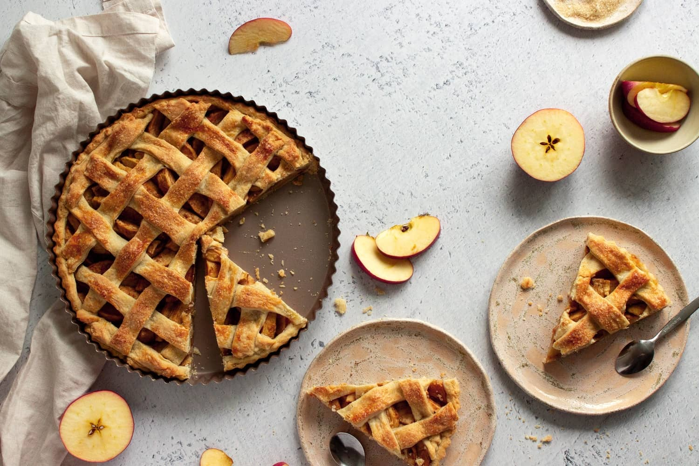
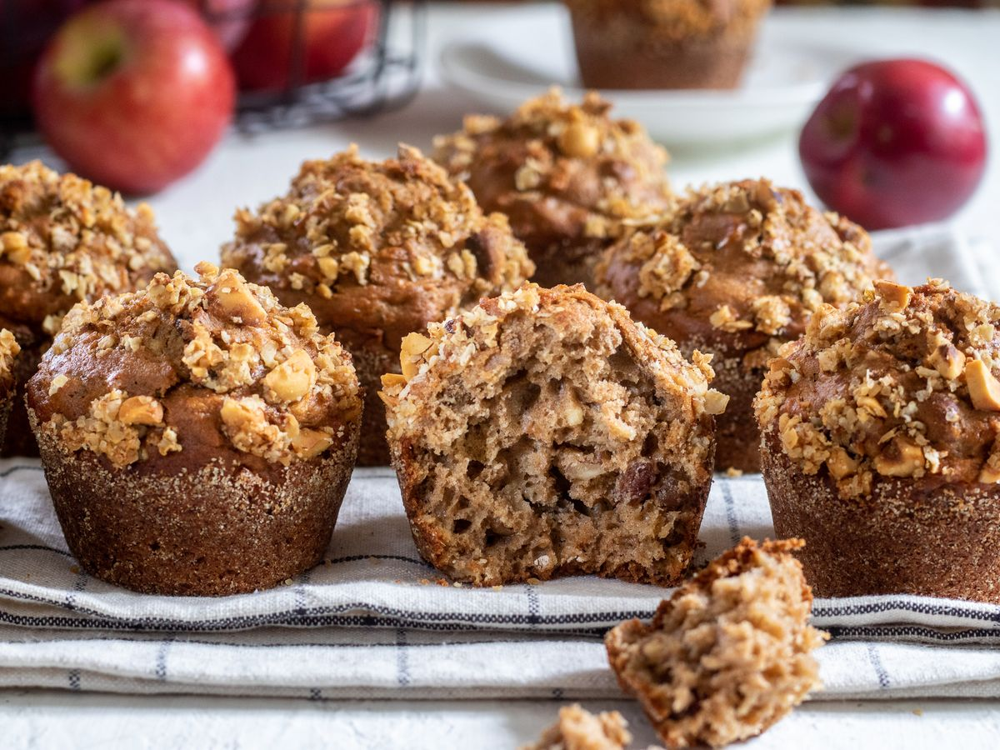

ÚVOD
slané recepty
sladké recepty
Recept: COOKIES

Suroviny:
- 115 g másla pokojové teploty
- 2 g soli
- 190 g hladké mouky
- 1 ks vejce
- 200 g čokolády
- 100 g cukru krystal
- 100 g hnědého cukru
- 2 g ledlé sody
Postup:
- Předehřejeme si troubu na 175 stupňů.
- Oba cukry utřeme s maslem do hladké pěny.
- Přidáme jedlou sodu rozpuštěnou v 5 ml horké vody a také sůl.
- Dále přidáme postupně mouku a čokoládu
- Směs necháme 15 min odpočívat v lednici.
- Poté z těsta vytvarujeme kuličky a položíme naplech s rozestupy.
- Pečeme cca 5-10 min.
- DOBROU CHUŤ!!
Recept: Jablečný koláč

Suroviny na těsto:
- 430 g mouky
- 170 g změklého másla
- 1 vejce
- 130 g moučkového cukru
- 1 vaniklový cukr
- 1 špetka muškátového oříšku
- 1/2 lžičky skořice
- 50 ml vody
Suroviny na náplň:
- 7 jablek
- 50 g másla
- 2 lžíce cukru
- 2 sáčky vanilkového cukru
- 1 lžíce skořice
- 2 lžíce mouky
Postup:
- Smíchejte mouku, muškátový oříšek, vanilkový cukr, skořici, moučkový cukr a nakonec máslo.
- Přilijeme vodu, aby nám vzniklo hladké těsto.
- Odebereme 1/3 a necvháme ji stranou. 2/3 těsta rozválíme a vložíme do vymazané formy na koláč.
- Do pánve dáme na tenké plátky nakrájená jablka.
- Na jablka nasypeme zbytek surovin a lehce povaříme, aby nám jablka změkla.
- Jablka nasypeme na těsto.
- Ze zbytku těsta vytvarujeme nahoru koláče pěknou mříšku.
- Kraje koláče potřeme vajíčkem a pečeme 45-50 min na 180 stupňů.
Recept: JABLEČNÉ MUFFINY

Suroviny:
Těsto:
- 200 g mouky
- 2 vajíčka
- 70 g cukru
- 150 ml mléka
- 80 ml oleje
- 2 lžičky prášku do pečiva
- 1 lžíce skořice
- 2 jablka, nakrájená na kostičky
Drobenka:
- 60 g másla pokojové teploty
- 80 g mouky
- 35 g hnědého cukru
- 1 lžíce skořice
Postup:
- V malé misce prošlehejte všechny suché ingredience.
- Přidejte mokré ingredience k suchým a šlehejte, aby se spojily.
- Opatrně vmícháme nakrájená jablka.
- Předehřejte troubu na 200C.
- Na drobenku smíchejte všechny ingredience vidličkou
- Formu na muffiny vyložte košíčkem na muffiny a těsto vložte do košíčků, navrch posypte drobenkou
- Pečte 7 minut při 200 °C po 7 minutách snižte teplotu na 175 °C a pečte 15-20 minut
- A MÁME HOTOVO! DOBROU CHUŤ!